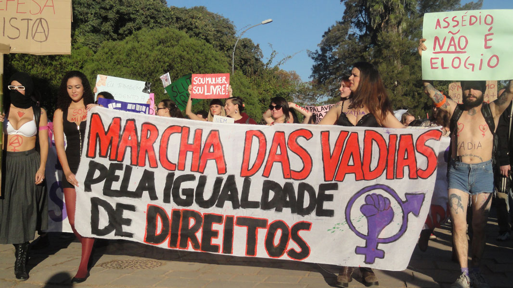

“It is not the machism that kills, but the human insensibility”
Fear, violence and silencing make part of the women's life since their beginning until their death.Those feelings and human's action are result of this patriarchal society, not only reproduced by the individuals holders of the male feature,but also by media, fashion industry, social websites, family and social life.
Due to the range of innumerable factors historically perpetuated, women are conditioned to think of it as "natural". It is only at the beginning of the nineteen century, that women realized the necessity of a political recognition, social and even human, with that, gave the "insight" to the legitimation of the feminine "being" in the western society. This "insight" is known as the "feminist movement”.
Important differences:
| Feminism | Femism | Machism |
|---|---|---|
| Equal rights and duties between genders. | Superiority of women in relation to other genders. | Superiority of men in relation to other genders. |
Patriarchate
Patriarchate is something inherent in society, even in modern times. This system is intrinsic to the collective, which has always been living with the hierarchy established between men and women, and man is always the superior subject in the hierarchical relationship. Thus, Simone de Beauvoir (1970) mentions that since the earliest historical records, man appeared as responsible for the heaviest tasks and in the order hand, the woman, always have been putting as inferior, since if there were any task that required a little more of the woman and she could not perform, she was immediately classified as impotent.
The history of women's fight and remote feminism for more than 200 years, being marked by diverse striking moments and historical facts. Generally, consider as a landmark of feminist historiography a fight organized by women for equal rights and duties during a French Revolution.
But if we look at the history of feminism in a broader sense, also considering the moments when women, individually or collectively, protested against the various forms of patriarchal domination (whether in their racist, capitalist and heteronormative ways) and claimed for better living conditions for themselves, this history and the facts that mark it are much more diverse.
Thinking about the whole history of the feminist movement, even when it was not recognized, its actions always polemicized the traditional society, regardless of the time in which they occurred. Currently, there is a huge reluctance on the part of Brazilian society to accept the existence of a culture of rape; Huge rejection of the manifestations of feminist groups (taking for example the well-known protest movement "Marcha das Vadias"), usually linked to the political leftists in the country, and discussions of the most diverse topics in social networks. Even breastfeeding in public places has been targeted by groups opposed to the act.
One of the main disputes between the feminist movement and the politicians of the National Congress's Evangelical Bench is related to the issue of the decriminalization of abortion, which for some time has become one of the most disputed feminist banners in Brazil.
Another issue raised by the voices of feminism is the lack of women's participation in politics and policies aimed at women. The question will always be that, right or left, conservative or not, women's rights must be respected. Public policies should be designed to meet the needs of the female population, to enforce gender equality, to ensure women's lives, to ensure their participation in places where they are not present or where they suffer prejudice, to combat veiled or explicit harassment, among many other issues.